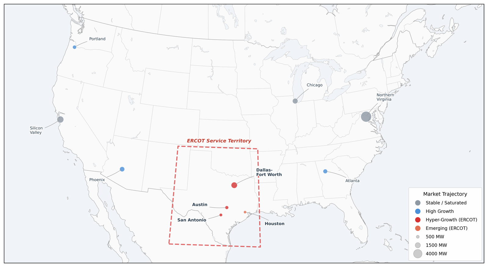

AI Data Center Energy
How AI data centers can get power sooner and more reliably by building their own generation and batteries while staying on the grid.
- Active
- 2025–present
- Data centers
- ERCOT
- Behind-the-meter generation
- Geothermal
- Energy storage

In plain English
Artificial intelligence is pushing data center power demand toward the gigawatt scale, the load of a small city. In Texas and elsewhere, connecting that much new load to the grid can take years, and a large site that suddenly drops off during a grid disturbance can unsettle the grid itself. This project studies how data centers can make part of their own power on site, on the customer's side of the utility meter, while staying connected, and what that means for cost, reliability and the grid around them.
The first result is a 2026 paper in Electricity by Dr. Jones and Erick C. Jones, Sr. It sets out a framework for comparing on-site power designs and tests six of them for a Texas data center growing from 25 to 250 megawatts. The lab is now turning the paper's notebooks into a tested code repository that regenerates its tables and figures and reports which published numbers do not reproduce. The work ties into the lab's Texas grid modeling, its research on reusing oil and gas wells for geothermal power, and its work on second-life batteries.
Main points
- Scores each on-site power design on two things at once, the cost of electricity and protection from grid outages, instead of cost alone.
- Combines a model of fluctuating AI workloads, a daily dispatch of each power mix, and technology cost estimates in one framework.
- Pairs fast lithium-ion batteries with repurposed electric-vehicle batteries, an idea shared with the lab's second-life battery research.
- Designs built around geothermal power came out cheapest, linking this work to the lab's studies of geothermal power from old oil and gas wells.
- The paper's code is being prepared for public release with a reproduction report, so others can check and extend the analysis.
Interactive demoThe Texas grid →
Interactive demoA second life for fossil-fuel infrastructure →
Papers
Can on-site power get AI data centers online faster and cheaper?
Jones, E.C., Jr., & Jones, E.C., Sr. (2026). Megawatts to zettaflops: A techno-economic framework for grid-tied behind-the-meter architectures in AI data centers. Electricity, 7(2), 43. https://doi.org/10.3390/electricity7020043
Six on-site power mixes for a 250 MW Texas AI data center: geothermal-based designs cost least, but the cheapest isn't the most resilient.
- Blended electricity cost ranged from $64.50/MWh (geothermal plus contracted solar plus grid) to $94.20/MWh (small modular reactor plus solar), against $75.00/MWh for buying all power from the grid.
- An all-geothermal site gave the highest outage protection (avoided loss-of-load probability above 99.9%) at $68.00/MWh, because it depends on neither the grid nor a fuel pipeline.
- The cheapest mix protected least (58.0%), because its 145 MW of on-site output cannot carry the full 250 MW load through a grid outage.
- Batteries and gas engines sit idle most of the time (7.5% and 30% capacity factors); the paper treats that spare capacity as insurance for uptime rather than waste.
![Scatter chart of six on-site power configurations for a 250 MW data center, with blended electricity cost on the horizontal axis and outage protection on the vertical axis. A dashed line marks the pure-grid baseline at $75 per MWh. 100% geothermal sits top left at $68 and above 99.9%. Solar plus gas engines is at $72.40 and 91.2%. Geothermal plus microturbines is at $77.80 and 84%. Gas engines plus battery is at $85.50 and 72.5%. Small modular reactor plus solar is far right at $94.20 and 72%. Geothermal plus solar plus grid is bottom left at $64.50 and 58%. Points are colored by fuel dependency: none, natural gas, or uranium.](img/paper-data-center-energy-2026.png)
Code and materials
People
- Erick C. Jones Jr., PhD, PEPrincipal Investigator · SEAR Lab directorin
Profiles marked in link to LinkedIn. More past and present lab members are on the SEAR Lab team page.